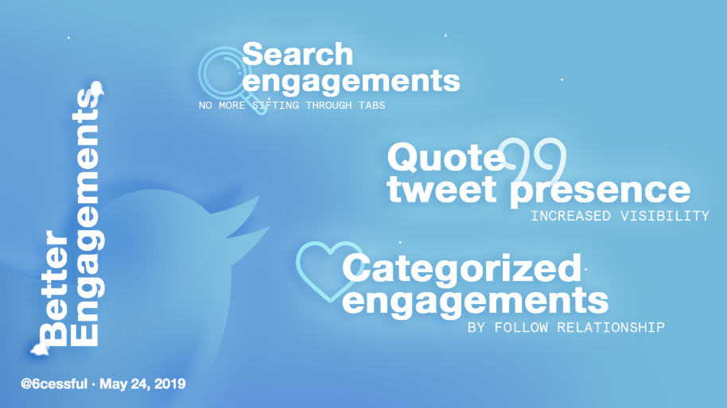
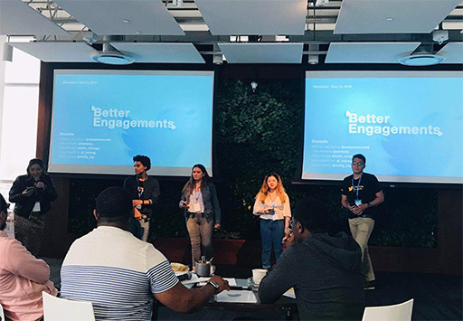

Twitter wants to be the place where people find out what's happening about the world, now. However, with the growth in Twitter's users and new algorithms that tend to result in more "viral" content, it's easier for people to feel lost in the conversation. Our objective was to make notifications and engagements more intuitive at scale, to convert and measure more follower relationships and sustained interaction between users.
Context
Elevating the Twitter conversation
Notifications are key to the Twitter platform: it's how engagement spreads. Recent Twitter developments trend through this, such as with algorithmic feeds that recommend tweets from the interactions of our followed user's own followings.
After being tasked to identify an area of improvement from the user profile page, we thought intentionally about core interactions becoming a spectacle. In contrast to desired goals of larger reach, inhibiting large conversations closes people on to follower loops. We believe there's space for notifications as they are today to grow to a place for stronger connections, and not just meaningless numbers.
Due to the timeframe (less than three days!) and with the given scope, we relied on quick user interviews, conversations with current engineers, and friends-and-family input to gather frustrations. We penned these down on boards and saw a common theme around interactions:
Problem Identification
 The current user journey for the problems described
The current user journey for the problems describedThere are three problem areas we wanted to tackle with "viral", mass-shared tweets:
- Unable to easily access the list of users who have engaged with a tweet
Lack of a search feature, requiring users to visit a profile and look through the "likes" or "tweets" tab to confirm an interaction has occurred. - No categorization or clear algorithm of display for like/retweet engagements
- Viewing a tweet's quoted tweets is only possible when pasting in a tweet's permalink in the search
Interestingly, many users sharing their frustrations gave comparisons—they weren't looking for new groundbreaking features or algorithmic changes, they wanted QoL functionalities present in other apps. These smaller gestures and usability pieces stuck out to us as our focus.
Checks on Twitter multiple times a day (more when procrastinating) as a nineteen-year-old university student up-to-date on pop culture. Twitter is not just for news, more like tidbits, first joke source. and group DMs. Interacts mostly with friends with a <700 followers, most are mutuals. Follows celebrities, pop culture, and comedy accounts on Twitter. Engages liberally through likes and retweets and isn't afraid to tweet their mind or have conversations run long in threads.
Checks Twitter a few times a week, especially when prompted by the news (e.g. following breaking events, hearing their President tweeted something) as a middle-aged, responsible user. Not enough time to be online without intent. Not concerned with the aesthetic side of the Twitter (Mary hasn't updated their photo since 2015 and has never uploaded a header), but excited at conversation and discoverability. Likes tweets liberally, low follower count (<100). Mostly engages through replies and "lurks" on the application.

From this series of observations and with our personas in mind, we defined goals based on Twitter's recent product releases and opportunity areas in our problem scope:
- Use tweet engagements as a space to drive more connections through an entrypoint for follow-follower relationships, and continued conversations through quote tweets.
- Increase user engagement with people outside of their mutual space (people who follow them, others) increasing follow-up interactions; and
- Increase user follow-follower relationship entry points through the engagement space
We want Cane to not feel overwhelmed when he goes viral, or be able to join in the conversation even after a few hours. Mary wants to sort through replies faster because they have little time, and feel like their inputs are being seen when responding to larger figureheads—they may also benefit from more followers and interaction.
Repurposing existing components was also a key design decision. There are QoL fixes and shouldn't take too much sprints to put out; we wanted something measurable that wouldn't take too much engineering time away from larger features: so to keep the design true and build on many underexplored portions of Twitter's functionality, everything is reused.
Design
Bridging new interactions through better journeys
Better engagements introduces an array of quality of life fixes in the tweet and timeline engagements area, here's a brief overview of the spaces that we're touching:
- Search Engagements: This allows users to search under the “liked by” and “retweeted by” menu’s to see which accounts engaged with that tweet
- Quote Tweet Presence: Allows users to see the who quoted tweets and what they said. Enables continued conversation whether it be about comedy or politics
- Categorized engagements: Along with searching through the accounts who've liked or shared a tweet, we're ordering them in collapsible categories based on your follow relationship – enabling you to discover new people or see your interactions with your mutuals
Screens and Journeys
Improving Tweet Detail Views
In our suite of interface changes, we also decided to be intentional about interface changes to promote user safety. Because these movements remove the veil under each user's engagements, it was critical that we propped up Twitter's existing security measures: such as muting or hiding notifications from users who don't meet certain standards of verification to prevent harassment or abuse.
Quality of life changes
In turning engagements into a connection space to bring meaning above numbers, we modified the pop-up modal to show a categorized and filterable list of accounts that have interacted with a certain tweet.
As detailed in the use case, it's silly that the only reliable way to see user interactions is to know the user's profile and scroll through their tweets. This makes it impossible for older tweets. Categorizing by follow relationships and potentially also in the reverse-chronological order of likes adds much more to the conversation. Other inputs include the DM and "settings" or block interactions reachable much quicker.
Non-obtrusive monetization was another area of opportunity we noticed. Brands and companies are user Twitter in new, casual and intimate ways of talking with their demographic. Allowing promoted accounts in search encourages brand interaction and exciting new lead generation opportunities beyond the feed: this is a step forward in brands telling users they're here, and they want to listen.
Resolving the gap in quote tweets
We saw a huge gap with quote tweets, which are growing as such a critical part of twitter conversations. Adding a tangible quote number and building on a modal for transparency opens us up to more diverse and sustained conversations.
Next Steps
Neutrality or visibility?
This case study brought to our attention a lot of facets of Twitter interaction: what algorithmic choices at one endpoint can do in influencing user desires and actions, the necessity of putting up safety measures when increasing visibility, and also valuing certain metrics over others—in our case, follow relationships.
Navigating engagement and performance is tricky. But what makes Twitter incredible is all these untapped features: DMs turning global conversation into intimate connections, to recognizing the jokes and also controversies from quote tweets. Taking the timeline to another level was interesting when recognizing that conversation is more than just in its 280-character purity: simple clarifications on the interface and understanding of user behaviors has the potential to create huge ripples in engagement.
- The value of giving users authentic experiences and giving them agency in their interactions can increase engagement rather than inhibit it.
- We're moving away from the tweet as the sole conversation piece and letting users build on them—just as talk goes in real life.
- Massive overhauls or new features aren't the only way to drive growth or conversions. Listening to user interactions and looking into subtle competitor interactions rather than just large new features is hugely informational.
Better Engagements is also a take on control over communities. The tweets we engage with are very telling—it's a common joke for a reason that "to know someone truly you should look through their Twitter likes."
